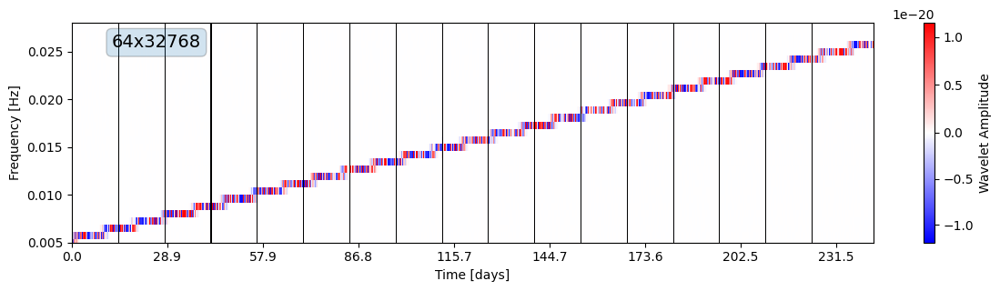
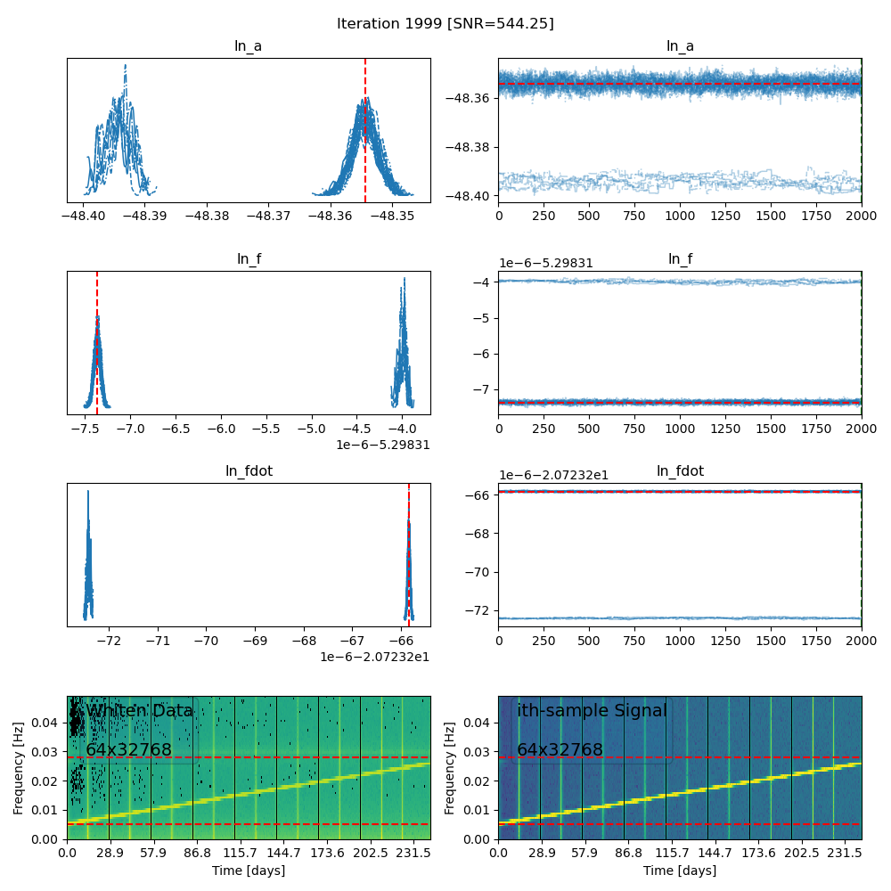
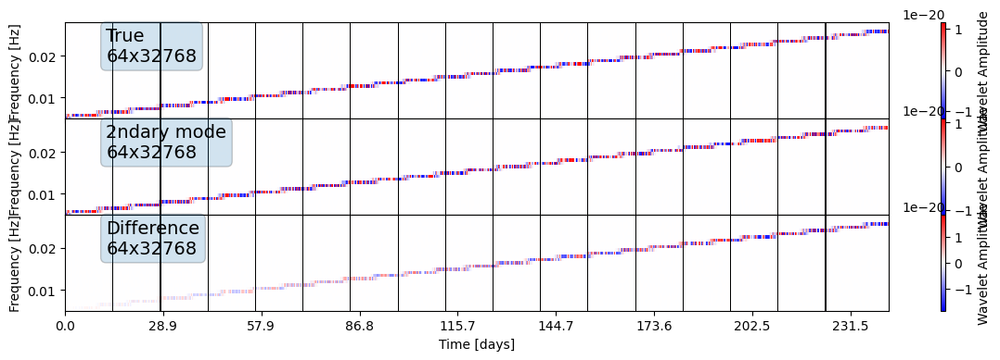

One year of LISA data#
%load_ext autoreload
%autoreload 2
import numpy as np
import os
from gap_study_utils.analysis_data import AnalysisData, get_suggested_tmax
from gap_study_utils.utils.signal_utils import waveform
from gap_study_utils.gaps.gap_funcs import generate_gap_ranges
from gap_study_utils.gaps import GapType
from gap_study_utils.mcmc_runner import run_mcmc
import matplotlib.pyplot as plt
np.random.seed(0)
LN_A = np.log(1e-21)
LN_F = np.log(0.005)
LN_FDOT = np.log(1e-9)
HOURS = 60 * 60
DAYS = 24 * HOURS
np.random.seed(0)
dt = 10
tmax = get_suggested_tmax(DAYS * 365.4)
outdir = f"outdir_1year"
os.makedirs(outdir, exist_ok=True)
gap_ranges = generate_gap_ranges(tmax, gap_period=DAYS * 14, gap_duration=HOURS * 7)
print("Number of gaps: ", len(gap_ranges))
The autoreload extension is already loaded. To reload it, use:
%reload_ext autoreload
Number of gaps: 17
data = AnalysisData(
data_kwargs=dict(dt=dt, noise=False, tmax=tmax),
gap_kwargs=dict(type=GapType.STITCH, gap_ranges=gap_ranges),
waveform_generator=waveform,
waveform_parameters=[LN_A, LN_F, LN_FDOT],
);
print("DONEE")
[20:49:49] INFO Initalizing GapWindow with STITCH gaps (17 gaps). analysis_data.py:129
INFO AnalysisData initialized. analysis_data.py:81
---------------------------------------------------------------------------
KeyboardInterrupt Traceback (most recent call last)
Cell In[23], line 1
----> 1 data = AnalysisData(
2 data_kwargs=dict(dt=dt, noise=False, tmax=tmax),
3 gap_kwargs=dict(type=GapType.STITCH, gap_ranges=gap_ranges),
4 waveform_generator=waveform,
5 waveform_parameters=[LN_A, LN_F, LN_FDOT],
6 );
File ~/Documents/projects/pywavelet/case_studies.gaps/src/gap_study_utils/analysis_data.py:82, in AnalysisData.__init__(self, data_kwargs, gap_kwargs, waveform_generator, waveform_parameters, plotfn)
79 self.priors:ProbDistContainer = construct_prior(self.waveform_parameters)
81 logger.info("AnalysisData initialized.")
---> 82 logger.info(self.summary)
File ~/Documents/projects/pywavelet/case_studies.gaps/src/gap_study_utils/analysis_data.py:325, in AnalysisData.summary(self)
322 @property
323 def summary(self) -> str:
324 """Formatted summary string of analysis metrics."""
--> 325 return "\n".join([f"{k}: {v}" for k, v in self.summary_dict.items()])
File ~/Documents/projects/pywavelet/case_studies.gaps/src/gap_study_utils/analysis_data.py:316, in AnalysisData.summary_dict(self)
308 if not hasattr(self, "_summary_dict"):
309 windowed = self.highpass_fmin is not None and self.highpass_fmin > 0
311 self._summary_dict = dict(
312 ht=self.ht,
313 gaps=self.gaps,
314 windowed=windowed,
315 noise=self.noise,
--> 316 **self.snr_dict,
317 )
318 self._summary_dict["lnL@true"] = f"{self.lnl(*self.waveform_parameters)}:.2e"
320 return self._summary_dict
File ~/Documents/projects/pywavelet/case_studies.gaps/src/gap_study_utils/analysis_data.py:333, in AnalysisData.snr_dict(self)
329 """Calculate various SNR values based on the analysis data."""
330 if not hasattr(self, "_snr_dict"):
331 self._snr_dict = compute_snr_dict(
332 self.hf, self.psd_freqseries, self.data_frequencyseries,
--> 333 self.hwavelet, self.psd_wavelet, self.data_wavelet,
334 self.psd_analysis, self.gaps, self.hwavelet_gapped
335 )
336 return self._snr_dict
File ~/Documents/projects/pywavelet/case_studies.gaps/src/gap_study_utils/analysis_data.py:299, in AnalysisData.data_wavelet(self)
294 if not hasattr(self, "_data_wavelet"):
295 data_timeseries = self.data_timeseries
296 self._data_wavelet = (
297 data_timeseries.to_wavelet(Nf=self.Nf)
298 if not self.gaps
--> 299 else self.gaps.gap_n_transform_timeseries(
300 data_timeseries, self.Nf, self.alpha, self.highpass_fmin
301 )
302 )
303 return self._data_wavelet
File ~/Documents/projects/pywavelet/case_studies.gaps/src/gap_study_utils/gaps/gap_window.py:232, in GapWindow.gap_n_transform_timeseries(self, ht, Nf, alpha, fmin)
226 gap_type_handlers = {
227 GapType.STITCH: self._gap_timeseries_chunk_transform_wdm_n_stitch,
228 GapType.RECTANGULAR_WINDOW: self._gap_timeseries_with_0s_n_transform
229 }
231 if self.type in gap_type_handlers:
--> 232 return gap_type_handlers[self.type](ht, Nf, alpha, fmin)
233 else:
234 gtypes = [f"GapType[{g.type.value}] {g.type}" for g in list(gap_type_handlers.keys())]
File ~/Documents/projects/pywavelet/case_studies.gaps/src/gap_study_utils/gaps/gap_window.py:192, in GapWindow._gap_timeseries_chunk_transform_wdm_n_stitch(self, ht, Nf, alpha, fmin)
188 for i, w in enumerate(chunked_wavelets):
189 # Get indices for matching time_bins with wavelet time
190 stich_tmask = np.zeros(Nt, dtype=bool)
191 stich_tmask[ # VERY SLOW
--> 192 np.argmin(np.abs(time_bins[:, None] - w.time), axis=0)
193 ] = True
195 # Get mask for valid time values in the wavelet
196 w_tmask = np.zeros(w.Nt, dtype=bool)
File ~/Documents/projects/WDMWaveletTransforms/venv/lib/python3.11/site-packages/numpy/core/fromnumeric.py:1325, in argmin(a, axis, out, keepdims)
1238 """
1239 Returns the indices of the minimum values along an axis.
1240
(...)
1322 (2, 1, 4)
1323 """
1324 kwds = {'keepdims': keepdims} if keepdims is not np._NoValue else {}
-> 1325 return _wrapfunc(a, 'argmin', axis=axis, out=out, **kwds)
File ~/Documents/projects/WDMWaveletTransforms/venv/lib/python3.11/site-packages/numpy/core/fromnumeric.py:59, in _wrapfunc(obj, method, *args, **kwds)
56 return _wrapit(obj, method, *args, **kwds)
58 try:
---> 59 return bound(*args, **kwds)
60 except TypeError:
61 # A TypeError occurs if the object does have such a method in its
62 # class, but its signature is not identical to that of NumPy's. This
(...)
66 # Call _wrapit from within the except clause to ensure a potential
67 # exception has a traceback chain.
68 return _wrapit(obj, method, *args, **kwds)
KeyboardInterrupt:
fig, ax = plt.subplots(1, 1, figsize=(12, 3.3))
fig, _ = data.data_wavelet.plot(ax=ax, whiten_by=None, freq_range=[0.005, 0.028])
fig.savefig(os.path.join(outdir, "data_wavelet.png"), bbox_inches="tight")

%%timeit
data.lnl(LN_A, LN_F, LN_FDOT)
402 ms ± 12.3 ms per loop (mean ± std. dev. of 7 runs, 1 loop each)
MCMC#
run_mcmc(
true_params=[LN_A, LN_F, LN_FDOT],
gap_ranges=gap_ranges,
gap_type="rectangular_window",
Nf=64,
tmax=tmax,
dt=dt,
alpha=0.0,
highpass_fmin=None,
frange=[0.005, 0.028],
noise_realisation=False,
outdir=f"{outdir}/mcmc_no_noise",
noise_curve='TDI1',
burnin=150,
n_iter=250
)

# Plotting both modes
lna = -48.395
lnf = (-4.0 * 1e-6)-5.29831
lnfdot = (-66.0 * 1e-6)-2.07232e1
mode2_wdm = data.htemplate(lna,lnf,lnfdot)
true_wdm = data.htemplate(LN_A,LN_F,LN_FDOT)
fig, axes = plt.subplots(3, 1, figsize=(12, 4), sharex=True, sharey=True)
true_wdm.plot(ax=axes[0], freq_range=[0.005, 0.028], label="True")
mode2_wdm.plot(ax=axes[1], freq_range=[0.005, 0.028], label="2ndary mode")
diffr = true_wdm - mode2_wdm
diffr.plot(ax=axes[2], freq_range=[0.005, 0.028], label="Difference")
plt.subplots_adjust(hspace=0.0)
plt.savefig(os.path.join(outdir, "true_vs_2ndary_mode.png"), bbox_inches="tight")
